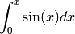

Getting Started with Multicore Programming using OpenMP¶
Notes about this document¶
This is designed to be a lab activity that you will perform on linux machines and/or on the Intel Manycore Testing Lab (MTL).
| Comments: | Sections labeled like this are important explanations to pay attention to. |
|---|
Dig Deeper:
Comments in this format indicate possible avenues of exploration for people seeking more challenge or depth of knowledge.
Getting started with OpenMP¶
We will use a standard system for parallel programming called OpenMP, which enables a C or C++ programmer to take advantage of multi-core parallelism primarily through preprocessor pragmas. These are directives that enable the compiler to add and change code (in this case to add code for executing sections of it in parallel).
See also
More resources about OpenMP can be found here: http://openmp.org/wp/resources/.
We will begin with a short C++ program, parallelize it using OpenMP, and improve the parallelized version. This initial development work can be carried out on a linux machine. Working this time with C++ will not be too difficult, as we will not be using the object-oriented features of the language, but will be taking advantage of easier printing of output.
The following program computes a Calculus value, the “trapezoidal approximation of

using  equal subdivisions.” The exact answer from this computation
should be 2.0.
equal subdivisions.” The exact answer from this computation
should be 2.0.
1 2 3 4 5 6 7 8 9 10 11 12 13 14 15 16 17 18 19 20 21 22 23 24 25 26 27 28 29 30 31 32 33 34 35 36 37 38 39 40 41 42 43 44 | #include <iostream>
#include <cmath>
#include <cstdlib>
using namespace std;
/* Demo program for OpenMP: computes trapezoidal approximation to an integral*/
const double pi = 3.141592653589793238462643383079;
int main(int argc, char** argv) {
/* Variables */
double a = 0.0, b = pi; /* limits of integration */;
int n = 1048576; /* number of subdivisions = 2^20 */
double h = (b - a) / n; /* width of subdivision */
double integral; /* accumulates answer */
int threadct = 1; /* number of threads to use */
/* parse command-line arg for number of threads */
if (argc > 1)
threadct = atoi(argv[1]);
double f(double x);
#ifdef _OPENMP
cout << "OMP defined, threadct = " << threadct << endl;
#else
cout << "OMP not defined" << endl;
#endif
integral = (f(a) + f(b))/2.0;
int i;
for(i = 1; i < n; i++) {
integral += f(a+i*h);
}
integral = integral * h;
cout << "With n = " << n << " trapezoids, our estimate of the integral" <<
" from " << a << " to " << b << " is " << integral << endl;
}
double f(double x) {
return sin(x);
}
|
| Comments: |
if (argc > 1)
threadct = atoi(argv[1]);
#ifdef _OPENMP
cout << "OMP defined, threadct = " << threadct << endl;
#else
cout << "OMP not defined" << endl;
#endif
integral = (f(a) + f(b))/2.0;
int i;
for(i = 1; i < n; i++) {
integral += f(a+i*h);
}
integral = integral * h;
Since n == |
|---|
To Do:¶
On a linux machine, create a file named trap-omp.C containing the program above or grab it and save it from the following link:
download trap-omp.C (on most browsers, right-click, save link as)
To compile your file, you can enter the command:
% g++ -o trap-omp trap-omp.C -lm -fopenmp
Note
Here, % represents your shell prompt, which is usually a machine name followed by either % or $.
First, try running the program without a command-line argument, like this:
% ./trap-omp
This should print a line “_OPENMP defined, threadct = 1”, followed by a line indicating the computation with an answer of 2.0. Next, try
% ./trap-omp 2
This should indicate a different thread count, but otherwise produce the same output. Finally, try recompiling your program omitting the -fopenmp flag. This should report _OPENMP not defined, but give the same answer 2.0.
Note that the program above is actually using only a single core, whether or not a command-line argument is given. It is an ordinary C++ program in every respect, and OpenMP does not magically change ordinary C++ programs; in particular, the variable threadct is just an ordinary local variable with no special computational meaning.
To request a parallel computation, add the following pragma preprocessor directive, just before the for loop.
#pragma omp parallel for num_threads(threadct) \
shared (a, n, h, integral) private(i)
The resulting code will have this format:
int i;
#pragma omp parallel for num_threads(threadct) \
shared (a, n, h, integral) private(i)
for(i = 1; i < n; i++) {
integral += f(a+i*h);
}
| Comments: |
|
|---|
Enter the above code change (add the pragma preprocessor directive), then compile and test the resulting executable with one thread, then more than one thread, like this:
% g++ -o trap-omp trap-omp.C -lm -fopenmp
% ./trap-omp
% ./trap-omp 2
% ./trap-omp 3
etc.
Dig Deeper:
- The OpenMP tutorial contains more information about advanced uses of OpenMP. Note that OpenMP is a combination of libraries and compiler directives that have been defined for both Fortran and C/C++.
- OpenMP provides other ways to set the number of threads to use, namely the omp_set_num_threads() library function (see tutorial section on library routines), and the OMP_NUM_THREADS linux/unix environment variable (see tutorial section on environment variables).
- OpenMP provides several other clauses for managing variable locality, initialization, etc. Examples: default, firstprivate, lastprivate, copyprivate. You could investigate this further in the tutorial section pertaining to clauses.
What’s happening?¶
After inserting the parallel for pragma, observe that for threadct == 1 (e.g., no command-line argument), the program runs and produces the correct result of 2.0, but that
% ./trap-omp 2
which sets threadct == 2, sometimes produces an incorrect answer (perhaps about 1.5). What happens with repeated runs with that and other (positive) thread counts? Can you explain why?
Note: Try reasoning out why the computed answer is correct for one thread but incorrect for two or more threads. Hint: All of the values being added in this particular loop are positive values, and the erroneous answer is too low.
If you figure out the cause, think about how to fix the problem. You may use the OpenMP website or other resources to research your solution, if desired.